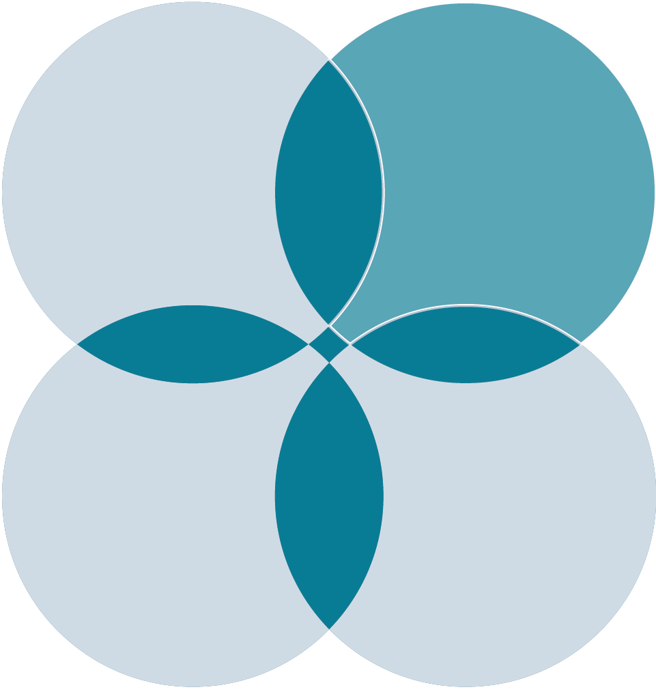

Home
About
Styles
Contact
Systems Design Style
With different mindset, designers and engineers are doing design in very different ways. Take the Systems Design Style Assessment to find out which style you prefer and what thinking skills you are good at.